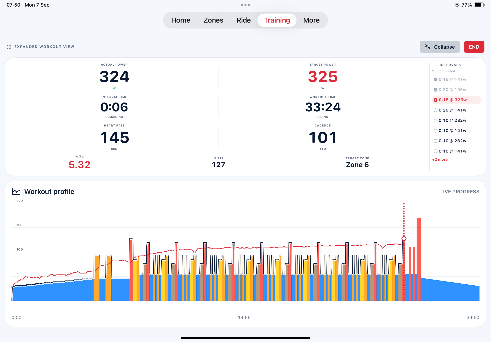

05
Ride
The workout, the response and the controls—together.
Follow personalised targets with the information that matters under pressure: actual and target power, heart rate, cadence, interval time, W/kg, percentage of FTP and the current training zone.
Live ERG controlWorkout biasCurrent and next intervalExpanded view

Workout Ride
A real workout. A real trainer. One focused screen.
Preview the profile, press play and let ERG mode apply each target using your FTP. Live power, cadence, heart rate, interval timing and the complete session remain visible.

Designed for the effort
Useful when looking at the screen is the last thing you want to do.
Large digital readouts and clearly separated controls make the screen easier to use during hard intervals. Expand the workout view when the live graph and headline metrics deserve the whole display.
- Actual and target power shown separately
- Current interval and next interval guidance
- One-touch pause, skip and workout bias controls
- Portrait and landscape layouts for iPhone and iPad
Next: Review
Keep the ride when the final interval ends.
Review the completed graph and performance metrics, save a readable local history or export the ride.